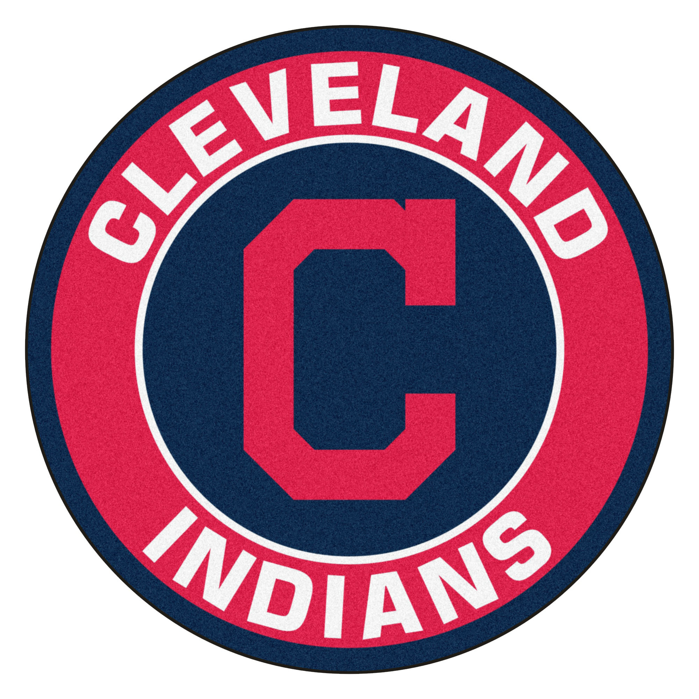

Mission Statement
UMD Philip Merrill Journalism Grad Student dedicated to furthering knowledge in Investigative and Arts & Entertainment Journalism with a strong focus on visual story telling through photography. As an aspiring Travel Journalist, I am looking to travel the globe, writing articles and guides from my experiences and contribute pictures and videos of each country.
Experience
Reporter
WMUC Radio: Drop the Pop/Weekly Roundout
September 2019-Present
Prepare scripts by researching and providing commentary on topics in enterntainment and international news.
Attend public or private events and interview guest and artists for radio content
Attend public or private events and interview guest and artists for radio content
Staff Writer, Photographer
The Black Explosion
September 2019-Present
Research, Pitch and Write articles for online posts.
Attend events to shoot and edit pictures for publication.
Attend events to shoot and edit pictures for publication.
Student Publication Associate
Apprentice House Press
September 2018-May 2019
Solicit and evaluate manuscripts submitted for publication.
Assist authors in editing and preparing manuscripts for publication.
Focus on developing marketing and sales plan before publication.
Write news releases and pitch review media.
Plan author events while conducting publicity campaigns through different media outlets
Assist authors in editing and preparing manuscripts for publication.
Focus on developing marketing and sales plan before publication.
Write news releases and pitch review media.
Plan author events while conducting publicity campaigns through different media outlets
Communication and Marketing Intern II
Anthem Inc., National Government Services
September 2018-January 2019
Assisted Communication manager with daily duties of internal and external communication: newsletters, emails, and websites.
Aided the Marketing manager in customer outreach while developing marketing plans, and shows for consumers
Aided the Marketing manager in customer outreach while developing marketing plans, and shows for consumers

Kids Clubhouse Attendant
Cleveland Indians-Kids Clubhouse
Summers, 2015-2019
Provided families with a safe environment during and after the game and assisted security and ushers.
Assisted families in playing with kids and expanding their knowledge of baseball
Assisted families in playing with kids and expanding their knowledge of baseball
Library Assistant - Customer Services
Loyola-Notre Dame Library
August 2015-May 2017
Assisted students in finding books, movies and online resources for their studies.
Collaborated with other assistants to keep the shelves stocked and organized
Collaborated with other assistants to keep the shelves stocked and organized
RCM Writing Intern
RivalCastMedia
June 2016-September 2016
Collaborated with fellow interns on development of written content and submitted gaming related ideas.
Learned about professional networking in the interest of cultivating a readership.
Utilized social media strategies for promoting published work and professional networking to cultivate readership.
Assisted with constructive critique of fellow interns’ articles and essays.
Learned about professional networking in the interest of cultivating a readership.
Utilized social media strategies for promoting published work and professional networking to cultivate readership.
Assisted with constructive critique of fellow interns’ articles and essays.
Education
University of Maryland, College Park
Master of Journalism, Investigative Journalism,
Expected May 2021
Master of Journalism, Investigative Journalism,
Expected May 2021
Loyola University Maryland
Bachelor of Arts in Communication, concentration in Journalism and Photography
August 2015-May 2019
Bachelor of Arts in Communication, concentration in Journalism and Photography
August 2015-May 2019
Katholieke Universiteit Leuven
Study Abroad (Communication, General Studies and Dutch)
August 2017-July 2018
Study Abroad (Communication, General Studies and Dutch)
August 2017-July 2018
Skills
Foreign Language: Intermediate in reading French, Intermediate in reading, writing, and speaking Dutch
Computer: Advanced knowledge of Microsoft Office Suite and intermediate knowledge of Adobe Creative Cloud, WordPress, Blogger and Sales Marketing Cloud
Interests: Volleyball, Writing, Cooking, Traveling, Dancing,Photography